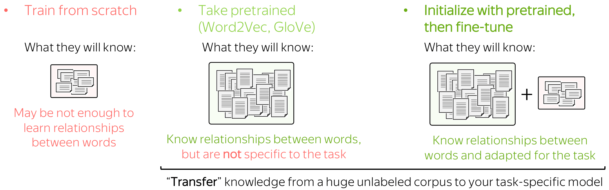
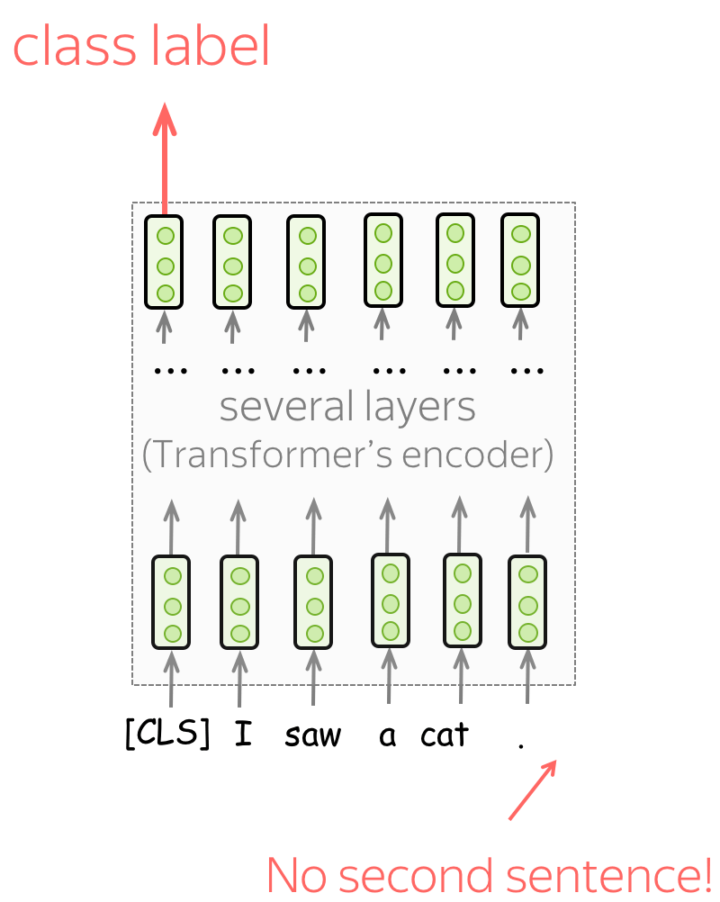

迁移学习简介 (英文原文)
编者按: 迁移学习内容繁多：因此，我无法在一个课程内容中将它全部涵盖。在这里，我将尝试给出一般的迁移思想，并将呈现它目前正在流行的一些方式。
目前，迁移学习可以算是是研究和行业中最受欢迎的NLP领域。大多数人可能已经听过ELMo，BERT等技术， 在这个课程之后，你会明白为什么它们如此受欢迎！
从一个模型迁移知识到另一个模型 (英文原文)
迁移学习的一般思想是将知识从一个任务/模型转移到另一个任务/模型。例如，在你感兴趣的任务中，没有大量数据（例如，分类），并且仅使用这些数据很难训练得到良好的模型。相反，你可以很容易的获得大量其它任务的数据 （例如，对于语言建模，你不需要标注任何标签，只需要最原始的纯文本）。
在这种情况下，你可以将知识从你不感兴趣的任务（我们称之为源任务）转移到你关心的任务上去，即目标任务 。
NLP领域中迁移学习的分类 (英文原文)
在Sebastian Ruder的博客文章中有几种类型的迁移。两种大类是直推式和归纳式迁移学习：它们将源任务和目标任务间任务和标签相同的迁移定义为直推式迁移学习，将任务和标签不相同的迁移定义为归纳式迁移学习。
分类来源于
Sebastian
Ruder's blog post.
在本节内容中，我们主要介绍归纳式迁移学习（Inductive learning），它有不同的任务，以及它的子类别，这些任务是按顺序学习的。
编者按: 我通常不愿意这样说，但在这里，我相信可以这么说，时序迁移学习是目前最受欢迎的研究领域之一。
我们将会看到什么？ (英文原文)
在本节内容中，我们聚焦于辅助模型的建模以及如何在建模端迁移知识
最简单的迁移：词嵌入（Word Embedding）(英文原文)
当我们介绍文本分类的时候，我们已经讨论了预训练词嵌入是如何起作用的。让我们回顾这一部分。
回顾：文本分类中的词嵌入 (英文原文)

词嵌入作为网络的输入。你有三种选择如何为模型获取这些表示：
- 作为模型的一部分从头训练
- 选取预训练嵌入（Word2Vec，GloVe，等）并将它们固定（将它们用作静态的嵌入）
- 用预训练的词嵌入作为初始化，并和最终的模型一起被训练（”微调模式“）
让我们通过查看模型可以使用的数据来考虑这些选择。分类的训练数据往往是任务相关的，标记数据通常很难得到。因此，这种语料库可能不是巨大的，或不是多样的，或两者。相反，用于训练词嵌入的标注数据不需要被标注，只需要纯文本就足够了。因此，这些数据集可能是巨大和多样的。

现在让我们考虑模型将知道什么，具体取决于我们如何使用词嵌入。如果词嵌入是从头开始训练，则该模型将仅“知道”分类标注数据，这可能不足以学习单词之间的关系。但如果我们使用预训练的词嵌入，他们（以及整个模型）将会了解一个巨大的语料库，从而学到很多关于这个世界的知识。为了使这些词嵌入适配于特定于任务的数据，可以通过和整个网络一起训练的方式来微调（fine-tune）这些词嵌入，这可以带来性能（尽管不是特别巨大）的提升。
当我们使用预训练词嵌入时，这就是迁移学习的一个例子：通过词嵌入，我们可以将大规模未标注训练数据的知识“迁移”到任务特定的模型中。
通过词嵌入进行迁移 (英文原文)
我们刚刚阐述了在特定任务模型中使用预训练词嵌入的主要思想：
通过词嵌入，我们可以将大规模的训练数据知识“转移”到我们的任务特定模型中。
在一个模型中，这种迁移是通过将随机初始化的词嵌入替换为预训练的词嵌入来实现的（同样，将权重从预训练的词嵌入复制到我们自己的模型中）。
请注意，我们不会更改模型：模型保持完全相同。但我们稍后会看到，情况并非总是如此。
预训练模型 (英文原文)
我们为词嵌入建立的知识迁移概念是通用的，无论（你的迁移对象是）词嵌入还是预训练模型。我的意思是，字面上是一样的：你可以用“单词嵌入”代替你模型的名字！
通过插入你的模型（_insert_your_model_），我们将训练数据的知识“转移”到特定于任务的模型中。
两个伟大的想法 (英文原文)
在这部分，我们将看到4个模型：CoVe，ELMo，GPT，BERT。请注意，现在这些模型存在许多变化：从非常小的修改（例如，训练数据和/或设置）到相当突出的修改（例如，不同的训练目标）。然而，粗略地说，从单词嵌入到当前最先进的模型的转换可以解释为两个想法。
这两个伟大的想法：
-
编码的内容：从单词到上下文单词内容
（从Word2Vec /GLoVE/etc。到CoVe / ELMo）; -
下游任务的使用方法:
从仅仅替换词嵌入到替换整个任务特定的模型
（从CoVe / ELMo到GPT / BERT的过渡）。
现在，我将解释这些想法以及相应的模型。
伟大的想法1：从单词到上下文 (英文原文)
正如我们刚才看到的，通过学习向量表示的知识转移早在预训练模型之前就存在了：在最简单的情况下，通过单词表示。让迁移更有效（因此更受欢迎）的是一个非常简单的想法：
我们可以学会表示单词以及它们所使用的上下文来学习单词。
好的。那我们该如何做？ (英文原文)
记得我们训练的神经语言模型吗？你需要与训练单词词嵌入相同类型的数据去训练这样的模型：自然语言中的纯文本（例如，维基百科文本，你想要的任何内容）。请注意，为此，你不需要任何的标注标签！
在模型中，语言模型也为每个单词构建向量表示，但这些向量不仅代表单词，还代表上下文中的单词。
例如，让我们看一个句子，“我看到垫子上有一只猫”，里面有一个单词猫（cat）。 如果我们使用单词嵌入，猫（cat）的向量将包含关于猫（cat）的一般概念的信息：这可以是你能想象到的任何种类的猫（cat）。 但是如果我们从语言模型中的某个地方为猫取一个向量，这就不再只是猫了！ 由于语言模型阅读了上下文，这只猫（cat）的向量表示将知道我看到的猫（cat）是坐在垫子上的那只。
迁移：用表示代替单词嵌入 (英文原文)
我们将看到两个模型，它们首先实现了用上下文编码单词的想法：CoVe和ELMo。它们的表达方式用于下游任务的方式几乎与单词嵌入的方式相同：通常，你只需要放置表示而不是单词嵌入（之前放置的位置，例如GloVe）。就这样！
请注意，这里每个任务都有一个特定于任务的模型，这些特定于任务的模型可能会有很大的不同。改变的是我们在将单词输入这些特定任务模型之前对其进行编码的方式。
编者按: 在最初的论文中，作者对任务特定模型提出了一些修改。然而，这些都是相当小的，粗略地说可以忽略。重要的是，CoVe和ELMo不是代表单个单词，而是代表上下文中的单词。
现在，剩下的 就是具体说明 (英文原文)
- 这是插图中的一些模型，
- 从该模型中获取哪些表示。
CoVe：从机器翻译中学习上下文单词表示 (英文原文)
CoVe代表“上下文向量”，首先在NeurIPS 2017年的Learned in Translation: Contextualized Word Vectors一文中被提出。作者首次提出学习如何不仅对单个单词进行编码，而且对单词及其上下文进行编码。
模型训练：神经机器翻译（长短时记忆网络LSTMs和注意力） (英文原文)
为了能在句子/段落的上下文中对单词进行编码，CoVe训练NMT系统并使用其编码器。主要的假设是，为了翻译一个句子，NMT编码器需要学习“理解”源句子。因此，编码器的向量表示包含有关单词上下文的信息。
在形式上，作者训练一个带有注意力机制的LSTM翻译模型（例如，我们在上一节课中看到的Bahdanau模型）。由于最终我们希望使用经过训练的编码器来处理英语句子（不是因为我们只关心英语，而是因为下游任务的大多数数据集都是英语），NMT系统必须从英语翻译成其他语言（例如德语）。
双向编码器：了解双向上下文 (英文原文)
注意，在这个NMT模型中，编码器是双向的：它连接前向和后向LSTM的输出。因此，编码器输出包含关于单词的左上下文和右上下文的信息。
获取表示：连接GloVe和Cove向量 (英文原文)
一旦NMT模型训练完之后，我们只需要它的编码器。对于给定的文本，编码器输出CoVe向量。对于下游任务，作者建议拼接Glove（代表单个单词）和CoVe（上下文中编码的单词）向量。其思想是，这些向量编码不同种类的信息，它们的组合可能是有用的。
结果：提升效果显著 (英文原文)
仅仅通过使用CoVe向量和Glove，作者在许多下游任务上取得了显著的改进：如文本分类、自然语言推理和问答。
图片来源于
原始 CoVe
论文。
ELMo：语言模型中的词嵌入 (英文原文)
ELMo模型是由Deep contextualized word representations提出。与CoVe不同，ELMo使用的表示不是来自NMT模型，而是来自语言模型。仅仅通过使用LM中的嵌入来替换单词嵌入（Glove），他们在问答、共指消解、情感分析、命名实体识别等任务上获得了巨大的改进。顺便说一句，这篇论文在2018年NAACL上获得了最佳论文奖！
现在让我们详细了解一下ELMo。
模型训练: 基于字符CNN的双向LSTM语言模型 (英文原文)
该模型非常简单，由两层LSTM语言模型组成：前向和后向。这两个模型的使用使得每个单词可以同时具有两个上下文：左上下文和右上下文。
同样有趣的是，作者如何获得初始单词表示（然后将其输入LSTM）。让我们回忆一下，在标准单词嵌入层中，我们为词汇表中的每个单词训练一个唯一的向量。在这种情况下，
- 单词嵌入不知道它们由哪些字符组成（例如，它们很难区分represent、 represents和 represented在 representation这些单词在写法上是相近的）
为了解决这些问题，作者将单词表示为字符级网络的输出。正如我们从图中看到的，这个CNN非常简单，由我们之前见过的组件组成：卷积、全局池化、高速公路连接和线性层。通过这种方式，单词表征知道它们的字符构成，我们甚至可以表示那些我们在训练中从未见过的单词。
获取表示: 不同层的表示加权求和 (英文原文)
一旦模型被训练，我们就可以使用它来获得单词表示。为此，对于每个单词，我们结合了前向和后向LSTM对应层的表示。通过连接这些前向和后向向量，我们构建了一个“知道”左右上下文的单词表示。
总体而言，ELMo表示有三个层：
- 第0层（嵌入） - 字符级CNN的输出；
- 第1层 - 前向和后向LSTM第1层的拼接表示；
- 第2层 - 前向和后向LSTM的第2层拼接表示。
每层包含不同的信息→ 把它们结合起来 (英文原文)
每一层都编码不同类型的信息：第0层-仅单词级别，第1层和第2层-上下文中的单词。与第1层和第2层相比，第2层可能包含更多高层信息：这些表示来自相应LMs的更高层。
由于不同的下游任务需要不同类型的信息，ELMo使用任务特定的权重来组合来自三层的表示。这些标量是从每个下游任务自动学习得到。最终的单词表示为所有层表示的加权和。
伟大的想法2: 拒绝特定任务模式 (英文原文)
接下来我们将看到的两类模型是GPT和BERT，它们在用于下游任务的方式上与之前的方法非常不同：
CoVe/ELMo replace word embeddings, but GPT/BERT replace entire models. CoVe/ELMo替代了单词嵌入，但GPT/BERT则替代了整个模型。
之前: 每个下游任务都有特定模型架构 (英文原文)
请注意，ELMo/CoVe表示主要用于替换嵌入层，而任务特定的模型结构则保持不变。这意味着，例如，对于共指消解，必须使用为这项任务设计的特定模型，对于词性标注——使用其他一些模型，用于问答——另一个非常独特的模型，等等。对于每项任务，研究人员需要不断改进特定于任务的模型架构。
之后: 单一模型则可针对所有任务进行微调 (英文原文)
与以前的模型相比，GPT/BERT并不是作为单词嵌入的替代品，而是作为任务特定模型的替代品。 在这种新设置中，首先使用大量未标记的数据（纯文本）对模型进行预训练。然后，在每个下游任务上对该模型进行微调。 重要的是，在微调过程中，你只需使用任务感知的输入转换（即以某种方式提供数据），而不是修改整个模型结构。
GPT: 针对语言理解的生成式预训练 (英文原文)
预训练 ：从左到右的Transformer语言模型 (英文原文)
GPT是一种基于Transformer的自回归语言模型（从左到右）。该结构是一个12层的Transformer解码器（没有解码器与编码器之间的注意力）。
形式上，如果\(y_1, \dots, y_n\)是一个训练序列，在第\(t\) 时刻模型的预测概率分布为 \(p^{(t)} = p(\ast|y_1, \dots, y_{t-1})\)。模型使用交叉熵损失函数进行训练，整个序列的损失为：
\[L_{xent}=-\sum\limits_{t=1}^n\log(p(y_t| y_{\mbox{<}t})).\]编者按: 有关从左到右语言建模和/或Transformer模型的更多详细信息，请参阅语言建模和Seq2seq及注意力。
微调: 将GPT用于下游任务 (英文原文)
微调损失包括任务特定损失和语言模型的损失：
\[L = L_{xent} + \lambda \cdot L_{task}.\]在微调阶段，除了最后的线性层，模型架构保持不变。每个任务的输入格式的变化请看下图：
图片来源于
原始 GPT 论文.
单句分类任务 (英文原文)
单句分类任务要对单个句子进行分类，只需在训练中输入数据，并根据最后一个输入标记的最终表示预测标签即可。
任务示例：
- SST-2 ：二元情感分类（我们在文本分类中介绍过）；
- CoLA （语言可接受性语料库） ： 代表一个句子在语言学上是否可接受。
句子对分类 (英文原文)
要对句子对进行分类，则使用特殊的标记分隔符（例如delim）来填充这两个片段。然后，根据最后一个输入标记的最终表示来预测最终的标签即可。
任务示例：
- SNLI： 蕴含分类。给出一对句子，判断两句话关系为蕴含、矛盾还是中性；
- QQP (Quora Question Pairs) ： 给出两个问题，判断它们在语义上是否等价；
- STS-B ： 给定两个句子，返回从1到5的相似性得分。
问答与常识推理 (英文原文)
在这些任务中，我们会得到一个上下文文档\(z\)、一个问题\(q\)和一组可能的答案\(\{a_k\}\)。 我们连接文档和问题，在delim标记后添加可能的答案。 对于每个可能的答案，使用GPT模型独立处理相应的序列；然后通过softmax层进行规范化，然后再可能的答案上生成输出分布。
任务示例：
- RACE ： 阅读理解。给出一篇文章、一个问题和几个答案选项，选择正确的一个。
- 故事完形填空 Story Cloze ： 故事理解和脚本学习。给出一个四句话的故事和两个可能的结局，选择正确的结局。
剩下的是: GPT-1-2-3，大量宣传，还有一点独角兽 (英文原文)
到目前为止，共有三种GPT模型：
- GPT-1: Improving Language Understanding by Generative Pre-Training（通过生成性预训练提高语言理解能力 ）
- GPT-2: Language Models are Unsupervised Multitask Learners（语言模型是无监督的多任务学习者）
- GPT-3: Language Models are Few-Shot Learners（语言模型是少样本学习者）
这些模型的差异主要在于预训练数据的数量和参数的数量（例如，请参阅这篇博客文章）。 请注意，这些模型太大了，只有大型公司才能负担得起预训练费用。这引发了许多关于使用此类大型模型（道德、环境等）的担忧的讨论。 如果你对这些感兴趣，你可以很容易地在网上找到很多信息。
但你绝对需要看到的是GPT-2在开放人工智能博客文章中关于独角兽的故事。
BERT: Bidirectional Encoder Representations from Transformers（基于Transformer的双向编码器表示） (英文原文)
BERT是在 BERT: Pre-training of Deep Bidirectional Transformers for Language Understanding一文中介绍的。如果ELMo在2018年NAACL上获得了最佳论文奖，一年后，BERT在2019年NAACL上也获得了最佳论文奖：）让我们试着理解为什么。
BERT的模型架构非常简单，你已经知道它是如何工作的：它只是Transformer的编码器。最新的部分是其中的预训练目标和BERT用于下游任务的方式。
我们如何使用没有标注的纯文本预训练（双向）编码器 ？我们只知道从左到右的语言建模目标，但它只适用于解码器，其中每个单词只能使用以前的标记（并且看不到未来）。BERT的作者提出了一个针对未标记数据的训练目标。在讨论它们之前，让我们先看看BERT将什么作为Transformer编码器的输入。
训练输入：带有特殊标记的成对句子 (英文原文)
在训练中，BERT可以看到用一个特殊的标记分隔符 [SEP]分隔的成对的句子。为了让模型容易区分这些句子，除了单词和位置嵌入，它还使用了片段嵌入。
编者按: For this gif, I used the figure from
the original BERT
paper.
另一个特殊标记是[CLS]。在预训练过程，它是用于NSP目标，我们将在下一步看到。一旦一个模型被预训练完成，它就可以被用于下游任务。
预训练目标: 下一句预测（NSP）目标 (英文原文)
下一个句子预测（NSP）的目标是二元分类任务。根据特殊标记[CLS]的最后一层表示，该模型可以预测这两个句子在某些文本中是否是连续的句子。 请注意，在训练中，50%的例子包含从训练文本中提取的连续句子，另外50%的例子包含随机的一对句子。请看原论文中的几个例子。
Input: [CLS] the man went to [MASK]
store [SEP] he bought a gallon [MASK] milk [SEP]
Label: isNext
Input: [CLS] the man went to [MASK]
store [SEP] penguin [MASK] are flight ##less birds [SEP]
Label: notNext
这项任务可以教会模型如何理解句子之间的关系。正如我们稍后将看到的，这将使我们能够在需要某种推理的复杂任务中使用BERT。
预训练目标: 掩码语言建模（MLM）目标 (英文原文)
BERT有两个预训练目标，其中最重要的是掩码语言建模（MLM）目标。具体MLM将在步骤中发生以下情况：
-
选择一些单词
（每个单词的选择概率为15%） -
替换这些选定的单词
（80%的概率使用特殊单词 [MASK]进行替换，10%的概率使用随机单词进行替换，10%的概率使用原始单词（保持不变）） - 预测原始单词（计算损失）。
下图显示了一个句子的训练步骤示例。你可以浏览幻灯片来了解整个过程。

MLM仍然是语言建模：目标是根据文本的某些部分预测句子/文本中的一些单词。为了更清楚，让我们将MLM与标准的从左到右语言模型目标进行对比。
在每一步中，标准的从左到右LMs根据之前的单词预测下一个单词。这意味着最终表示，即来自最终层的用于预测的表示，只对以前的上下文进行编码，也就是说，它们看不到未来。
与此不同的是，MLM可以一次看到整个文本，但有些单词已经损坏：这就是为什么BERT是双向 的。请注意，为了让ELMo同时了解左右上下文，作者必须训练两个不同的单向LMs，然后连接它们的表示。在BERT中，我们并不需要这样做：一个模型就足够了。
微调: 在下游任务中使用BERT (英文原文)
现在让我们看看如何将BERT应用于不同的任务。现在，我们只讨论简单的设置：使用BERT微调单个下游任务。稍后，我们将看到为不同的任务调整模型的其他方法（例如，在适配器章节部分）。
在这一部分中，我只会提到一些任务。有关流行评估数据集的更多详细信息，请查看GLUE benchmark website网站。

单句分类 (英文原文)
要对单个句子进行分类，模型按照图示输入数据，并根据[CLS]标记的最终表示预测标签。
任务示例：
- SST-2 - 二元情感分类（我们在文本分类章节中看到的）；
- CoLA (语言可接受性语料库) - 判断一个句子在语言上是否可接受。
句子对分类 (英文原文)
如何要对成对的句子进行分类，则像预训练中过程中输入数据一样。与单句分类任务类似，根据[CLS]标记的最终表示来预测标签。
Examples of tasks:
- SNLI - 蕴含分类。给出一对句子，判断两句话关系是否为蕴含、 矛盾还是 中性）；
- QQP (Quora Question Pairs) - 给出两个问题，判断它们在语义上是否等价；
- STS-B - 给定两个句子，相似性得分从1到5。
问答 (英文原文)
对于QA，BERT的作者只使用了一个数据集，即SQuAD v1.1。在这项任务中，给你一段文字和一个问题。这个问题的答案总是文章的一部分，任务是找到文章的正确部分。
要使用BERT完成这项任务，需要输入一个问题和一篇文章，如图所示。然后，对于文章中的每个单词，使用最终的BERT表示来预测该单词是正确答案的开始还是结束。
单句序列标注任务 (英文原文)
在序列标注任务中，必须预测每个单词的标签。例如，在 命名实体识别（NER） ,中，你必须预测单词是否为命名实体及其类型（例如，位置、人物等）。
适配器：参数高效迁移 (英文原文)
到目前为止，我们只考虑了将知识从预训练模型（如BERT）转移到下游任务的标准方法：微调。“微调”是指采用预先训练好的模型，并以相当小的学习率为你感兴趣的任务（例如情感分类）进行训练。这意味着，首先，你需要更新整个（大型）模型，其次，对于每个任务，你需要微调整个预训练模型的副本。最后，对于几个不同下游任务，你最终会得到非常多大型模型——这是非常低效的！
作为一种替代方案，ICML 2019论文Parameter-Efficient Transfer Learning for NLP提出了NLP的参数有效迁移学习，建议使用适配器模块进行迁移。在这种设置中，原始模型的参数是固定的，每个任务只需训练几个可训练的参数：这些新的特定于任务的参数称为适配器。 使用适配器模块，迁移变得非常高效：最大的部分，即预训练模型，是在所有下游任务之间共享的。
图片来源于
Parameter-Efficient Transfer
Learning for NLP.
图中显示了适配器模块和带有适配器的Transformer的示例。如你所见，适配器模块非常简单：它只是一个具有非线性的两层前馈网络。重要的是，这个网络的隐藏维度很小，这意味着适配器中的参数总数也很小。这也是使适配器非常高效的原因。
其他适配器和一些资源 (英文原文)
现在，对于许多任务和模型，适配器有许多不同的修改。例如，AdapterHub存储库包含经过预训练的适配器模块。这是EMNLP 2020的system demo，如果你想找到最新适配器版本的链接，这可能是一个很好的起点 (Lena: 至少，在我写这篇文章的时候：2020年12月初，也就是EMNLP 2020后的几周 ).
（关于）基准的笔记 (英文原文)
最流行的基准是GLUE及其版本SuperGLUE。GLUE benchmark网站包含数据集描述、排行榜等。
分析与解释 (英文原文)
首先，让我们回顾一下我们在之前的章节中已经使用的分析方法：探索模型组件（例如CNN/LSTM中的神经元和Transformer中的注意头），探索语言结构（例如，NMT表示是否对形态学信息进行编码），以及通过观察模型的预测来评估特定现象（例如，评估语言模型中的主谓一致性）。今天，我们将研究当同样的方法应用于BERT时会发生什么。
模型组件：BERT的注意力头 (英文原文)
在之前的内容中，我们研究了文本分类中的CNN卷积核、 语言模型中的LSTM神经元和NMT Transformer中的注意头。现在，让我们看看研究人员在BERT头部的注意力模式中发现了什么！
简单模式: 位置头、对[SEP]的注意力和周期 (英文原文)
还记得我们在机器翻译Transformer中看到的位置性自我注意头吗？事实证明，BERT也有这样的注意力头。What Does BERT Look At? An Analysis of BERT’s Attention表明，BERT的一些注意力头具有简单的模式：不仅是位置性（当所有单词关注前一个或下一个单词时），而是一些注意力头将所有注意力集中在一些单词上，例如周期的特殊标记[SEP]。
样例来源于
What Does BERT Look At? An
Analysis of BERT’s Attention.

Examples of syntactic heads from the paper What Does BERT Look At? An Analysis of BERT’s Attention
Examples of syntactic heads from the paper What Does BERT Look At? An Analysis of BERT’s Attention
Examples of syntactic heads from the paper What Does BERT Look At? An Analysis of BERT’s Attention
Examples of syntactic heads from the paper What Does BERT Look At? An Analysis of BERT’s Attention
Examples of syntactic heads from the paper What Does BERT Look At? An Analysis of BERT’s Attention
句法头 (英文原文)
与为NMT Transformer发现的关注句法的自我注意力头类似，这里也发现了几个专门跟踪某些句法功能的BERT头。请看图示。
请注意，还有其他一些研究BERT的注意力机制的工作。例如， Do Attention Heads in BERT Track Syntactic Dependencies?中确认一些BERT头是句法相关的，而其它一些工作并没有很有自信找到类似功能的头。因此和往常一样，你需要非常小心：）
探索： BERT重新发现了经典的NLP管道 (英文原文)
现在有很多论文将探针应用到BERT身上。在这一部分中，我们来看一下ACL2020短文BERT Rediscovers the Classical NLP Pipeline。
方法： 用一点创造力进行探索 (英文原文)
在上一节课中，我们学习了语言结构的标准探针：
- 将数据输入预训练模型，
- 从某个层获取向量表示，
- 基于这些表示训练一个探针性的分类器去预测语言标签，
- 使用它的准确性来衡量表示对这些标签的编码程度。
当然，这也可以为BERT做。但是BERT有很多层（例如18层或24层），为了理解哪一层更好地编码某项任务，我们必须为每项任务训练18（或24）个探测分类器——这是很繁重的工作！
幸运的是，作者想出了一种方法来同时评估所有层。为了训练探测分类器，他们不需要分别从每一层选取表示，而是对所有层的表示进行加权，并使用探测分类器学习权重（就像在ELMo中一样！）。一旦探针分类器经过训练，权重可以衡量不同层对特定任务的重要性。
什么： 边缘探测任务 (英文原文)
作者们进行了一系列边缘探针任务的实验。这些是一些语言任务的测试集。看看下面的一些例子。
•词性标注
I want to find more , [something] bigger or
deeper .
→ NN (Noun)
•组成分析
I want to find more , [something bigger or deeper] . → NP (Noun Phrase)
•依存分析
[I]\(_1\) am not [sure]\(_2\) how reliable it
is , though . → nsubj (nominal subject)
•实体
The most fascinating is the maze known as [Wind Cave] . → LOC (location)
•语义角色标注
I want to [find]\(_1\) [something bigger or deeper]\(_2\) . → Arg1 (Agent)
•共指
So [the followers]\(_1\)
wanted to say anything about what [they]\(_2\)
saw . → True
结果： BERT遵循经典的NLP管道 (英文原文)
The figure with the results is from the paper
BERT Rediscovers the Classical NLP Pipeline.
结果如右图所示。图层从左到右显示，每层的权重以深蓝色显示。
我们看到，当你从底层到顶层时，一层对每一层的影响会先上升，然后下降。但主要结果并不在于价值观本身，而是在于BERT代表不同语言任务的方式。 在经典的NLP中，有不同任务的顺序（这是图中所示的顺序，以及我向你展示每个任务示例的顺序）。 要解决经典NLP中的后续任务，必须解决之前的所有任务。有趣的是，BERT以同样的顺序表示这些任务 ！例如，依存性的表示要晚于词性标注，而共指的学习则要晚于这两个任务。
看看预测：ELMo和BERT知道事实吗？ (英文原文)
在语言建模章节中，我们学习了如何通过观察语言模型的预测来评估特定现象的语言模型。 在那章中，我们看了一个非常流行的主谓一致任务。 今天，我们将做一些更有趣的事情——探索一个模型是否知道事实！例如，我们使用EMNLP 2019的工作 Language Models as Knowledge Bases?。
The figure with the results is from the paper
Language Models as Knowledge Bases?
通常，事实知识存储在包含三元组（主语、关系、宾语）的知识库中，如图所示（Dante，born in，Florence）/ （但丁，出生于，佛罗伦萨）。然而，这些知识库很难获得：要提取知识，通常需要使用复杂的管道来获取。
但是，如果预先训练过的语言模型（ELMo，BERT）已经知道事实会怎样呢？让我们检查一下！我们将向模型输入一个带有MASK单词的完形填空式句子，而不是关系三元组。 例如，我们喂入模型一个句子，但丁出生在_______； 并要求它预测一个代词来代替MASK。请注意，我们没有任何进行微调-只是使用一个简单的语言模型！
事实证明，经过预训练的模型可以很好地掌握事实知识。请注意，这里的“知道”并不意味着他们了解任何东西，只是这些模型中再训练数据捕获的统计特征信息可以用于提取事实。看看下面的一些例子（原工作论文还有更多）
样例来源于
Language Models as Knowledge Bases?
更有趣的是，我们不仅可以了解正式事实，还可以了解常识：看看例子。有关测试集构造的更多详细信息，可以查询paper。

相关论文
相关论文！
逐步更新中！
Have Fun!
即将推出！
逐步更新中！